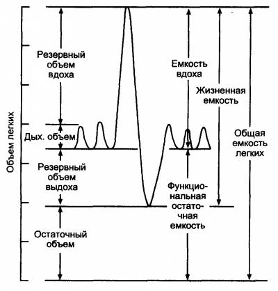
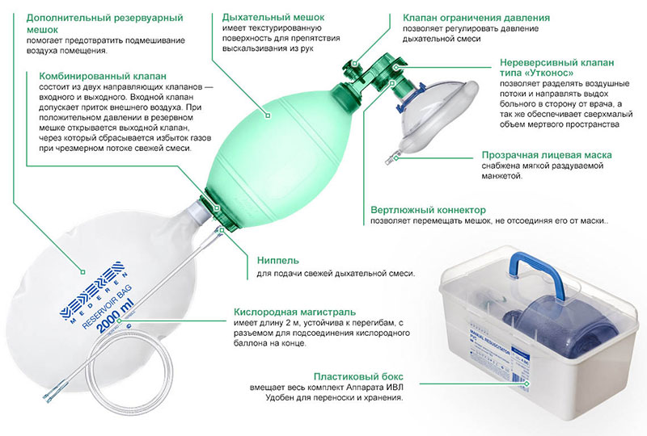

Это самая сложная тема в анестезиологии/реанимации и естественно в скорой помощи, условия которой имеют определенные нюансы и накладывают некоторые ограничения.
Признаки острой дыхательной недостаточности:
1. Одышка, тахи- или брадипноэ
2. Изменение цвета кожных покровов:
бледность-акроцианоз-цианоз или другие оттенки (при отравлении угарным газом – розовый оттенок или синевато-серый)
3. SpO2 < 90% при дыхании атмосферным воздухом
Клинические признаки неэффективной спонтанной вентиляции:
– тахипноэ (ЧД > 35 в мин)
– брадипноэ (ЧД < 10 в мин)
– акроцианоз
– апноэ
По этиологии выделяют виды ОДН:
1. Центрального генеза (ЧМТ, повышение ВЧД и отёк мозга любой этиологии, интоксикации, медикаментозное воздействие на головной мозг и т.д.)
2. Нарушение нейро-мышечной передачи (столбняк, миастении, кахексия, травмы спинного мозга, введение миорелаксантов)
3. Нарушение целостности дыхательного аппарата (травмы грудной клетки, множественные переломы рёбер, разрыв диафрагмы, пневмо-, гидро-, гемоторакс)
4. Обструктивная (ларинго-, бронхо-, бронхиолоспазм (астма), инородное тело в дыхательных путях, нарушение дренажной функции бронхов и т.д.)
5. Рестриктивная (полисегментарная пневмония, ОРДС, синдром Мендельсона, отёк лёгких любой этиологии).
6. Перфузионная (ТЭЛА, гиповолемия)
7. Смешанная
Вне зависимости от причины тактика на догоспитальном этапе не будет меняться: это устранение основной причины + коррекция гипоксемии оксигенотерапией, ИВЛ/ВВЛ.
Краткая анатомия и физиология дыхания
В атмосферном воздухе 21% кислорода.
Носовые ходы – Носоглотка – Ротоглотка – Гортаноглотка – Гортань (здесь воздух увлажняется и согревается)
Трахея – Бронхи – Бронхиолы (проводящая часть нижних дыхательных путей, иногда сюда включают гортань)
Дыхательные бронхиолы – альвеолярные ходы – альвеолы (дыхательная часть нижних дыхательных путей, где происходит газообмен)
Медицинский кислород имеет влажность около 0,009%. Недостаток увлажнения дыхательной смеси приведёт повышению нагрузки на бронхиальные железы, избыточной потере воды – до 800 мл и энергии - до 500 ккал в сутки. При этом в отличие от нормальной физиологической ситуации, когда согревание и увлажнение вдыхаемого воздуха происходит в полости носа, - у интубированного или трахеостомированного пациента испарение происходит со слизистой оболочки трахеи и бронхов, что приводит к повышению вязкости бронхиального секрета. При достижении критического уровня вязкости цилиарные клетки оказываются не в состоянии удалять секрет из дыхательных путей. После этого цилиарные клетки утрачивают реснички. Очевидно, что нарушение эвакуации мокроты приводит к росту частоты воспалительных осложнений. Повреждение реснитчатого эпителия выявляются уже через 10 минут вентиляции сухим газом. Процесс восстановления ресничек длительный и энергозатратный и занимает 2-3 недели после восстановления влажности и нормальной температуры дыхательной смеси. Важно отметить, что после того, как резервы увлажнения с поверхности трахеи и бронхов исчерпаны, и неувлажненный воздух достигает альвеол, начинается испарение с поверхности альвеол и происходит повреждение сурфактанта (что приведет к спадению альвеол).
Вязкая мокрота налипает на стенки интубационной или трахеостомической трубки, сужая её просвет вплоть до полной обтурации. Таким образом, идеальное решение задачи кондиционирования дыхательной смеси выглядит так:
В ТРАХЕЮ ПАЦИЕНТА ДОЛЖНА ПОСТУПАТЬ ОЧИЩЕННАЯ ДЫХАТЕЛЬНАЯ СМЕСЬ 100% ВЛАЖНОСТИ НАГРЕТАЯ ДО 37°С.
Когда используется 100% кислород:
– премедикация перед кардиоверсией
– кардиогенный шок
– отёк лёгких
– стеноз гортани
– инородное тело ВДП (с понижением концентрации после устранения обструкции)
– эпилептический статус
– ожоговый шок/ингаляционный ожог/электроожог
– странгуляционная асфиксия
Во всех остальных случаях достаточно 50-60% концентрации. Концентрация вдыхаемого кислорода обозначается как FiO2.
Механика вдоха и выдоха
Фазы:
Время вдоха (Inspiratory flow time)
Инспираторная пауза (Inspiratory pause)
Время выдоха (Expiratory flow time)
Экспираторная пауза (Expiratory pause)
Вдох = время вдоха + инспираторная пауза
Выдох = время выдоха + экспираторная пауза
Зачем это нужно знать? При управлении аппаратом ИВЛ, мы обязаны сообщить ему сколько времени, по нашему мнению, может длиться экспираторная пауза. Если время экспираторной паузы истекло, а вдох не начался, аппарат ИВЛ объявляет тревогу (alarm) и начинает спасать пациента, поскольку считает, что произошло апноэ (apnoe). Включается опция Apnoe ventilation.
Давление в дыхательных путях:
Любой поток создается разностью давлений или градиентом (gradient). Например, если открыть кислородный баллон возникнет градиент, и кислород с шумом устремится наружу. Главной движущей силой, позволяющей сделать вдох, является разность давлений на входе в дыхательные пути (PAWO - pressure airway opening) и давлением в том месте, где дыхательные пути заканчиваются – то есть в альвеолах (PALV). Учёные, изучающие дыхание, договорись принять атмосферное давление за 0. Если давление ниже атмосферного, – отрицательное (negative), а если выше, – положительное (positive).
Когда мы дышим самостоятельно, вдыхая, создается отрицательное давление в дыхательных путях, и поток воздуха идет в легкие, давление нарастает и на высоте вдоха становится положительным. Затем следует выдох и по градиенту давлений воздух выходит из легких в окружающее пространство. Таким образом, самостоятельное дыхание, – это NPV (negative pressure ventilation) поскольку на вдохе давление воздуха в дыхательных путях ниже атмосферного. Вдох – это активный процесс, требующий затрат энергии, выдох может быть как активным, так и пассивным.
Обозначения:
Pmax - пиковое давление в дыхательных путях – 16-25 mbar
I:E соотношение вдоха к выдоху – 1:1,5-2 (у пожилых больных 1:1,5; у детей 1 : 2,5— 1:3)
Ppause – давление во время инспираторной паузы
Pmean – среднее давление в дыхательных путях
Что такое ПДКВ (PEEP - positive end expiratory pressure), и для чего оно нужно?
ПДКВ - положительное давление конца выдоха, было придумано для борьбы с ЭЗДП (экспираторное закрытие дыхательных путей) по-английски Air trapping (дословно – воздушная ловушка). У пациентов с ХОБЛ (хроническая обструктивная болезнь легких, или COPD – chronic obstructive pulmonary disease, просвет бронхов уменьшается за счет отека слизистой оболочки. При выдохе мышечное усилие дыхательной мускулатуры через ткань легких передается на внешнюю стенку бронха, ещё больше уменьшая его просвет. Часть бронхиол, не имеющих каркаса из хрящевых полуколец, пережимается полностью. Воздух не выдыхается, а запирается в легких, как ловушке (происходит Air trapping). Последствия – нарушения газообмена и перерастяжение (hyperinflation) альвеол.
АутоПДКВ (AutoPEEP Intrinsic PEEP) возникает, когда настройки аппарата ИВЛ (частота дыханий, объём и длительность вдоха) не соответствуют возможностям пациента. В этом случае пациент до начала нового вдоха не успевает выдохнуть весь воздух предыдущего вдоха. Соответственно давление в конце выдоха (end expiratory pressure) оказывается значительно более positive, чем хотелось бы. Когда сформировалось преставление об АутоПДКВ (Auto PEEP, Intrinsic PEEP или iPEEP), договорились под понятием PEEP понимать то давление, которое создает в конце выдоха аппарат ИВЛ, а для обозначения суммарного ПДКВ введен термин Total PEEP.
Total PEEP = AutoPEEP + PEEP
PEEP – это опция, которая встраивается в различные режимы ИВЛ. ПДКВ (PEEP) измеряют в сантиметрах водного столба (см H2O) и в миллибарах (mbar или мбар). 1 миллибар = 0,9806379 см водного столба. В норме (раньше) 3-5 mbar. Сейчас можно 8-10 mbar у пациентов с нормальными легкими.
Легочные объёмы
ДО — дыхательный объём (VT – Tidal Volume) — это объем воздуха, поступающий в легкие и удаляемый из них за один дыхательный цикл.
Норма 6-9 мл/кг, но лучше 5-7 мл/кг
МОД — объем воздуха, проходящий через легкие за 1 минуту.
МОД = ДО * ЧДД
РОВд – резервный объём вдоха (IRV – Inspiratory Reserve Volume) – дополнительный объём, который можно вдохнуть по окончании спокойного вдоха. Составляет примерно 100-150 % от ДО.
РОВыд – резервный объём выдоха (EVR – Expiratory Reserve Volume ) –дополнительный объём который можно выдохнуть после окончания спокойного выдоха. Составляет примерно 100 – 120 % от ДО.
ЖЕЛ – Жизненная емкость легких = ДО + РОВд + РОВыд
Общая емкость легких = ЖЕЛ + Остаточный объем
АМБУ
Размеры:
Взрослый (Adult) (1600 ml) - >30 кг или старше 10 лет
Педиатрический (Pediatric) (500 ml) - от 10 до 30 кг (1 год - 10 лет)
Неонатальный (Neonate) (240 ml) до 10 кг (< 1 года)